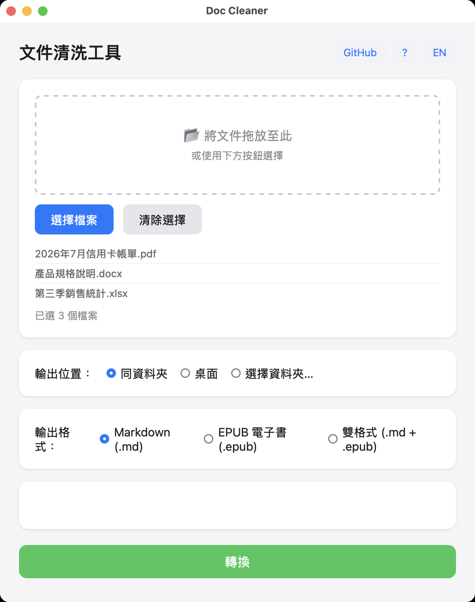
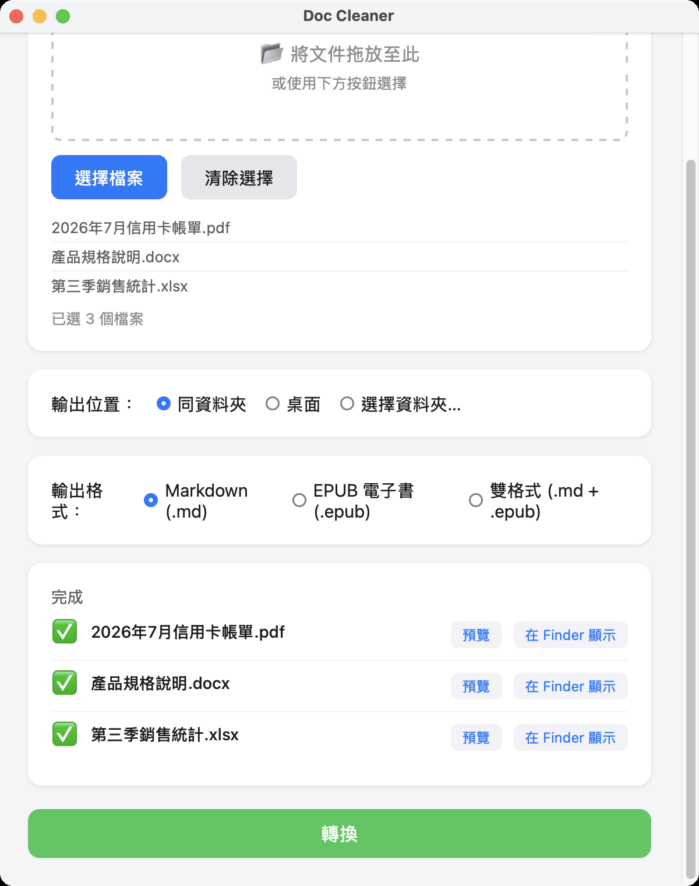
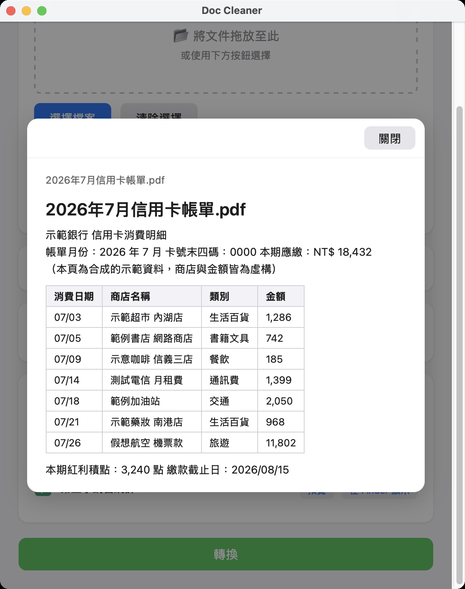

Doc Cleaner
把日常文件轉成 Markdown
PDF、Word、Excel、PowerPoint、Apple Keynote／Numbers、
EPUB 電子書等 16 種格式，拖進視窗就變成乾淨好讀的 Markdown 文字檔，
中文與表格都完整保留。
桌面版全程在你自己的電腦上運作，檔案不上傳、不註冊、不追蹤。
macOS／Windows 桌面程式 · 完全免費 · 開放原始碼（MIT 授權）· 轉檔不需要網路
這是什麼？
手上一疊 PDF 對帳單、Word 報告、Keynote 投影片、EPUB 電子書，想丟給 AI 讀、 想放進筆記軟體、或只是想搜尋裡面某一句話，第一關卡住的往往是格式。 Doc Cleaner 把這些日常文件抽成純文字的 Markdown：中文編碼 （Big5／CP950／UTF-16）自動偵測，表格轉成 Markdown 表格而不是黏成一團文字， PDF 則依內容自動決定用哪種方式處理。
桌面版就是一個視窗：把檔案或整個資料夾拖進去，選輸出位置，按開始， 轉完可以直接預覽。想要批次處理或接進自己的腳本與 AI agent， GitHub 上有同一套核心的命令列版本。
安裝說明
macOS
打開下載的 .dmg，把 App 拖進「應用程式」。程式已經過
Apple Developer ID 簽章與公證，雙擊就能開，不需要右鍵開啟或調整安全性設定
（v1.7.0 以前的版本未公證，首次開啟會出現安全性警告）。
Windows
執行下載的 .msi 安裝程式。若出現藍色的 SmartScreen 視窗，
點「其他資訊」→「仍要執行」（Windows 安裝檔尚未購買憑證簽章，這是系統對
它的標準提示，不是程式有問題）。
快速上手（三步）
- 安裝並打開
macOS 從「應用程式」打開 Doc Cleaner；Windows 從開始功能表打開。 介面有中文與英文，會依系統語言自動選擇，也可以手動切換。 - 把文件拖進來
單一檔案、多個檔案，或整個資料夾都可以（資料夾會連子資料夾一起處理）。 不方便拖曳就用「選擇檔案」按鈕。 - 拿走 Markdown
預設存在原始檔案旁邊，也可以改成桌面或任一指定資料夾，設定會記住。 輸出格式可選 Markdown、EPUB 電子書，或兩者都要；轉完可以直接預覽。
畫面
桌面版就是這一個視窗。以下截圖使用合成的示範文件， 商店名稱與金額皆為虛構。



支援格式
共 16 種，涵蓋日常最常遇到的文件類型。
- PDF：原生文字、加密（需密碼）、掃描件（掃描件需搭配 命令列版本的 AI 視覺模式）
- Office：Word（DOCX、DOC）、Excel（XLSX、XLS）、 PowerPoint（PPTX、PPT）、CSV
- Apple iWork：Keynote（.key）、Numbers（.numbers）、 Pages（.pages，新版需先在 Pages 內匯出 PDF）
- 其他：EPUB 電子書、純文字（TXT、MD）、 AutoCAD 圖檔（DXF）、Claude Code 對話紀錄（JSONL）
其中 DOC、PPT、PAGES 這三種舊格式在 macOS 是靠系統內建元件 轉換，Windows 上需要另外安裝 LibreOffice。
核心特色
- 中文不變亂碼：Big5／CP950／UTF-16 自動偵測， 台灣的舊文件與金融對帳單常見編碼都實測過
- 表格是一等公民：Word、Excel、PDF 的表格轉成 Markdown 表格，跨頁的表會接回一張，合併儲存格不會被複製到每一格
- 格式一次到齊：16 種格式，包含較少工具支援的 Apple Keynote／Numbers 與 EPUB 電子書
- 拖進去就好：整個資料夾遞迴處理，輸出位置與偏好會記住， 轉完直接預覽結果
- 檔案不離開電腦：桌面版做的是純文字提取， 不需要任何 API key，轉檔過程零網路請求
- 也能當零件用：命令列版本可批次執行並輸出 JSON 摘要， 方便接進腳本或 AI agent
常見問題
需要註冊 GitHub 或任何帳號嗎？
不用。點上面的下載按鈕就會直接下載安裝檔；使用程式的過程也完全不需要 帳號。GitHub 只是我們存放程式碼與安裝檔的地方，就像一個檔案倉庫， 訪客下載不需要登入。
免費嗎？之後會收費嗎？
完全免費，而且開放原始碼（MIT 授權）。它是為了自己的需要而做的工具， 沒有商業模式，也沒有任何內購或訂閱。
我的文件會被傳到哪裡嗎？
桌面版不會。它做的是本機純文字提取，轉檔過程零網路請求（只有按下視窗右上角的 GitHub 按鈕才會開啟瀏覽器），轉出的檔案存在你指定的位置。GitHub 上的命令列版本另外提供選用的 AI 加強模式，可接雲端 （Gemini、Groq）或本機 Ollama，那是要自己開啟並填入 API key 的功能， 桌面版沒有。
表格轉出來會準嗎？
有框線的表格（多數 Office 文件、大多數 PDF 對帳單）實測良好，包含跨頁 接續與只有表頭畫線的表格重建。純靠空白對齊、完全沒有框線的表格目前仍可能 跑掉，這是已知限制。遇到轉壞的表格歡迎回報。
掃描的 PDF 可以轉嗎？
如果 PDF 裡有文字層（例如手機掃描 App 做過辨識的），可以。 純圖片、沒有文字層的掃描件，桌面版抽不出內容，需要用命令列版本搭配 AI 視覺模式處理。
macOS 說「無法打開」或 Windows 跳出藍色警告？
macOS：v1.7.1 之後的版本已簽章公證，正常雙擊即可；若下載的是更舊的
版本，按住 Control 點程式圖示 →「開啟」。
Windows：SmartScreen 視窗點「其他資訊」→「仍要執行」。這是系統對未購買
憑證的安裝檔的標準提示。
有命令列版本嗎？
有，和桌面版共用同一套核心。需要 Python 3.9 以上，從 GitHub clone 後
pip install -r requirements.txt 即可使用，支援批次處理、
廣告與法律聲明清洗規則、JSON 摘要輸出，也附了 SKILL.md
方便 AI agent 直接呼叫。詳見 GitHub 上的說明文件。
遇到問題怎麼回報？
到 GitHub 的 Issues 頁留言（這個需要免費註冊一個 GitHub 帳號），描述你轉的是 什麼格式、看到什麼訊息即可。請不要把含有個人資料的真實文件附上去， 需要樣本時請先把敏感內容改掉。